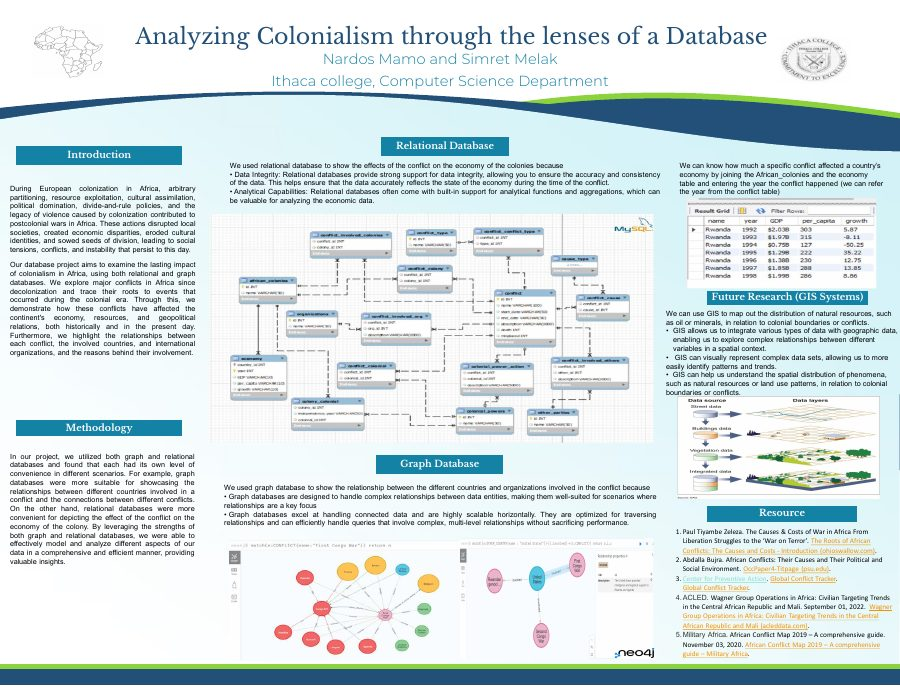
Databases · History
Analyzing Colonialism through the Lenses of a Database
Relational data used to investigate historical conflicts and their economic consequences.
View original PDF ↗Read text version ↗
Databases · History
Relational data used to investigate historical conflicts and their economic consequences.
View original PDF ↗Read text version ↗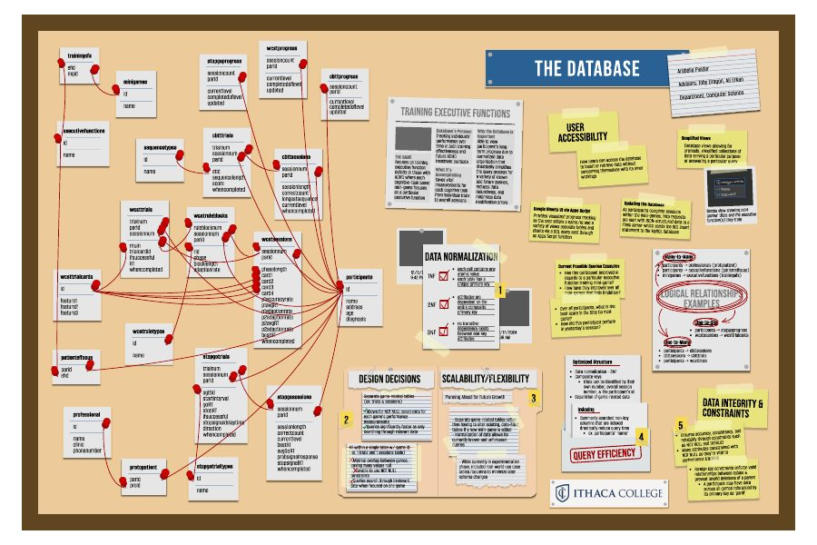
Games · Databases
Database architecture supporting a research system built around cognitive games.
View original PDF ↗Read text version ↗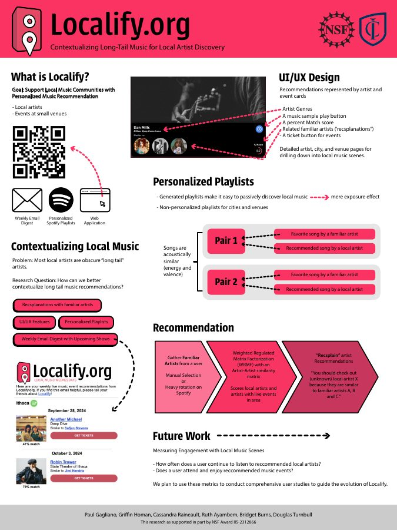
Recommendation Systems · Music
Music recommendation and interface design oriented toward local artists and events.
View original PDF ↗Read text version ↗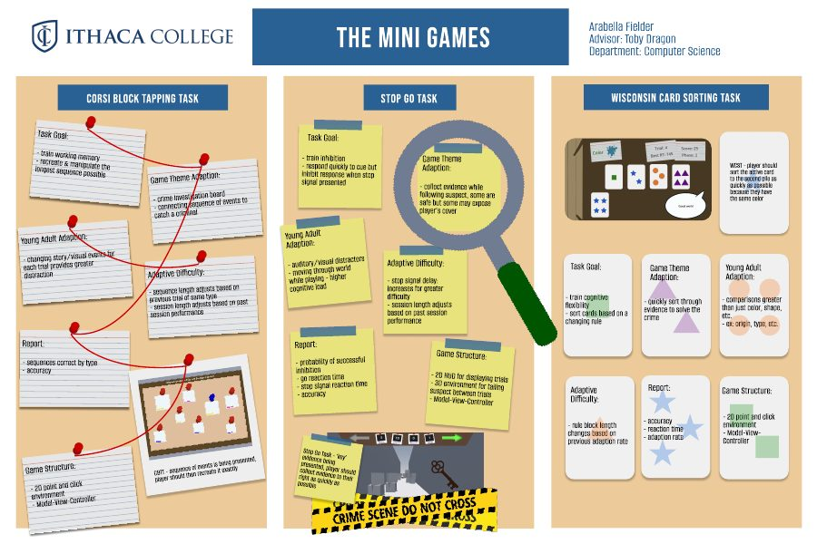
Games · Health
Interactive tasks that explore working memory, inhibition, and cognitive flexibility.
View original PDF ↗Read text version ↗Databases · Civic Data
Combining election datasets into a unified database for querying and analysis.
View original PDF ↗Read text version ↗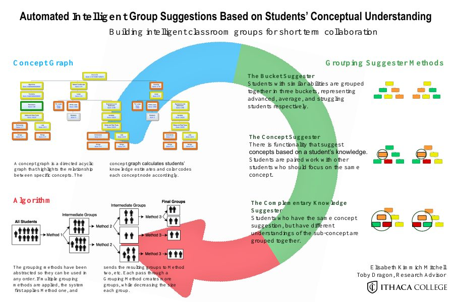
Education · Algorithms
Approaches to grouping students using conceptual understanding.
View original PDF ↗Read text version ↗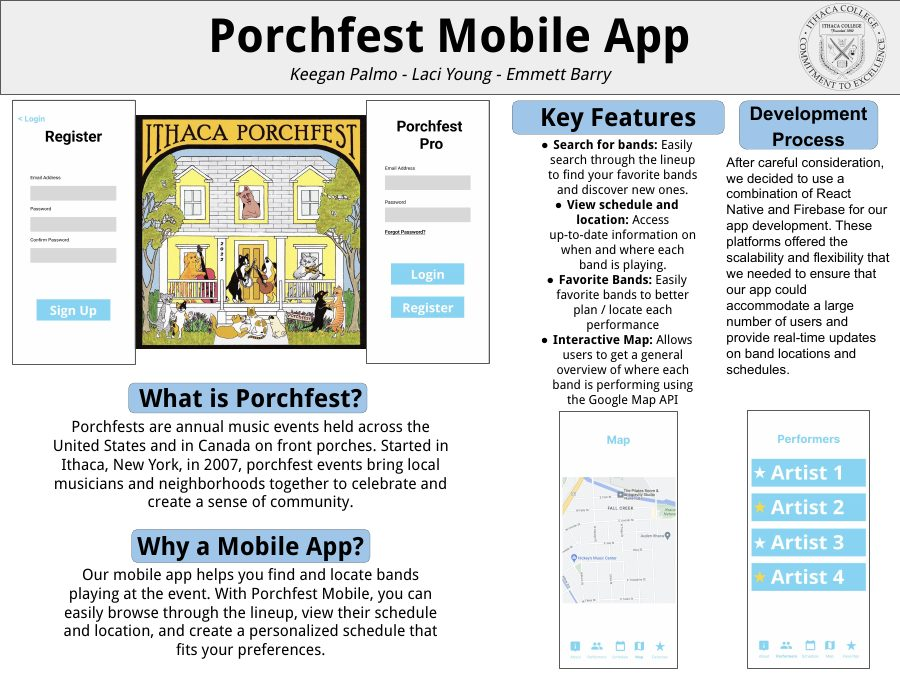
Mobile Apps · Music
A mobile application for discovering performers and navigating Porchfest schedules and locations.
View original PDF ↗Read text version ↗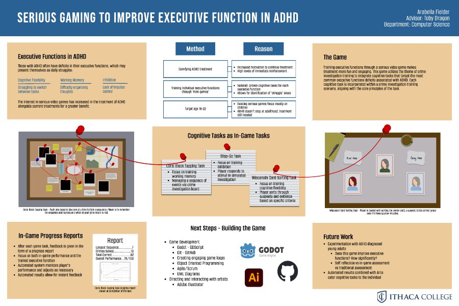
Games · Health
A serious-game research concept addressing executive-function skills.
View original PDF ↗Read text version ↗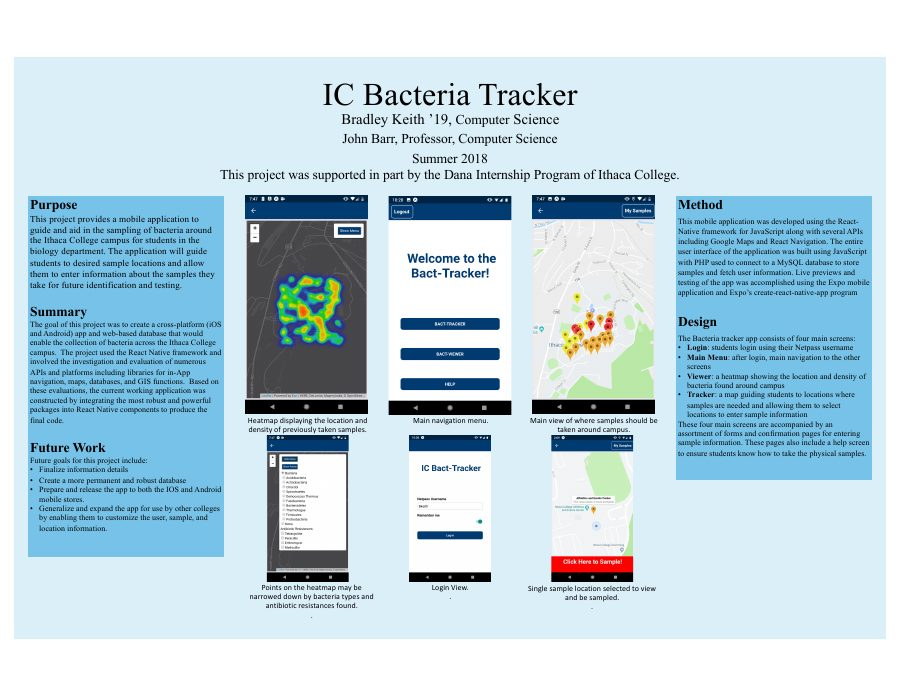
Mobile Apps · Biology
A mobile tool supporting biological sample collection and tracking.
View original PDF ↗Read text version ↗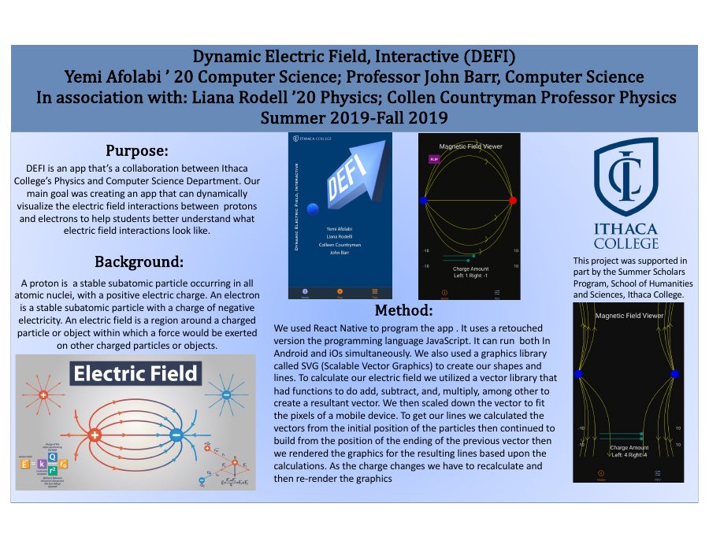
Simulation · Physics
An interactive application for visualizing electric fields.
View original PDF ↗Read text version ↗Data Analysis · Climate
Computational approaches to measuring changes in temperature variability.
View original PDF ↗Read text version ↗Spatial Analysis · Society
Spatial investigation of leaked data from an extremist online forum.
View original PDF ↗Read text version ↗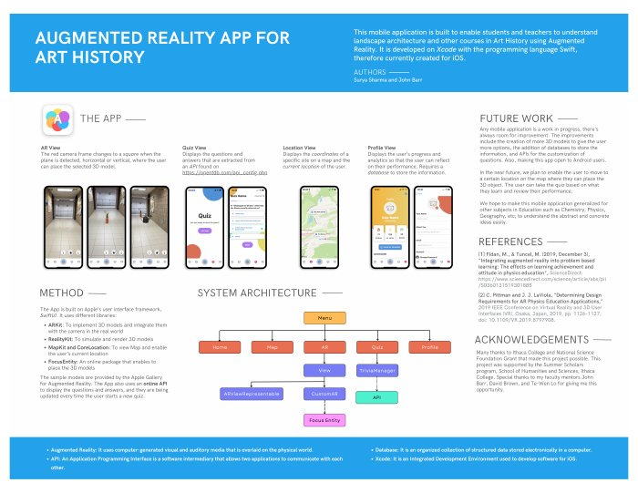
Augmented Reality · Humanities
An interdisciplinary project connecting augmented reality and art history.
View original PDF ↗Read text version ↗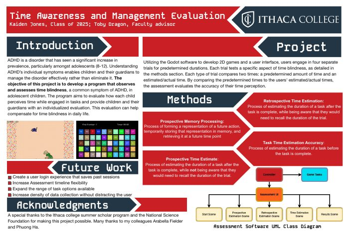
Games · Health
Interactive games for studying time perception and time management in children with ADHD.
View original PDF ↗Read text version ↗